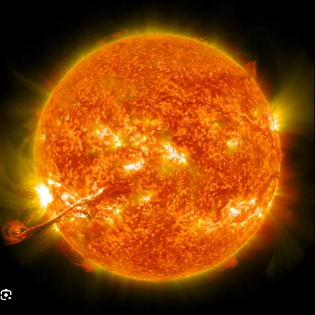

The Solar System is a vast and intricate system that includes the Sun, eight planets, their moons, dwarf planets, asteroids, comets, and other celestial bodies. It is a dynamic environment where gravitational forces govern the motion of these objects, creating a complex interplay of orbits and interactions.
The most massive objects that orbits the sun are eight planets. The four terrestrial planets, Mercury, Venus, Earth, and Mars, are rocky and have solid surfaces. The four gas giants, Jupiter, Saturn, Uranus, and Neptune, are composed mainly of gases and have thick atmospheres. Only Earth and Mars orbit within the habitable zone, where conditions are suitable for liquid water to exist on the surface. Beyond the frost line at about five astronomical units (AU), are two gas giants - jupiter and Saturn - and two ice giants - Uranus and Neptune.
The Solar System has at least nine dwarf planets: Ceres, Orcus, Pluto, Haumea, Quaoar, Makemake, Gonggong, Eris, and Sedna. Six planets, seven dwarf planets, and other bodies have orbiting natural satellites, which are commonly called 'moons', and range from sizes of dwarf planets, like Earth's Moon, to moonlets. The Solar System also contains small bodies such as asteroids, comets, centaurs, meteoroids, and interplanetary dust clouds. Some of these bodies are in the asteroid belt (between Mars's and Jupiter's orbit) and Kuiper belt (just outside Neptune's orbit).
In between the bodies of the Solar System is an interplanetary medium of dust and particles. At around 70 - 90 AU from the Sun, the solar wind is halted by the interstellar medium, resulting in the heliopause. It is the boundary between the Solar System and interstellar space. The heliosphere is the region of space dominated by the solar wind, which extends far beyond the orbit of Pluto. The Solar System is part of the Milky Way galaxy, which is a barred spiral galaxy containing billions of stars, including our Sun. The Solar System is located in the Orion Arm of the Milky Way, about 26,000 light-years from the galactic center. The Solar System is believed to have formed about 4.6 billion years ago from a rotating disk of gas and dust, known as the solar nebula. The Sun formed at the center of this disk, while the planets and other bodies formed from the remaining material through a process called accretion.
The Sun is the central star of the Solar System and is the most massive object in it, containing about 99.86% of the total mass of the Solar System. It is a nearly perfect sphere of hot plasma, primarily composed of hydrogen (about 74%) and helium (about 24%), with trace amounts of heavier elements like oxygen, carbon, neon, and iron. The Sun's core is where nuclear fusion occurs, converting hydrogen into helium and releasing an immense amount of energy in the form of light and heat. This energy is what powers the Sun and provides the light and warmth necessary for life on Earth.
The Sun has a diameter of about 1.39 million kilometers (864,000 miles), making it about 109 times larger than Earth. Its surface temperature is around 5,500 degrees Celsius (9,932 degrees Fahrenheit), while the core temperature reaches about 15 million degrees Celsius (27 million degrees Fahrenheit). The Sun's energy output is approximately 3.8 x 10^26 watts, which is equivalent to the energy produced by about 100 billion nuclear power plants.
The Sun's gravitational pull keeps all the planets, asteroids, comets, and other objects in the Solar System in orbit around it. Its magnetic field and solar wind extend far beyond Pluto, shaping the heliosphere and protecting the planets from cosmic radiation. Solar activity, such as sunspots, solar flares, and coronal mass ejections, can affect space weather and have significant impacts on Earth's technology, satellites, and even climate.
As a G-type main-sequence star (G2V), the Sun is about halfway through its life cycle, estimated to be around 4.6 billion years old. In about 5 billion years, it will exhaust its hydrogen fuel and evolve into a red giant, eventually shedding its outer layers and leaving behind a white dwarf. The study of the Sun helps scientists understand stellar evolution, nuclear fusion, and the conditions necessary for life in the universe.

Mercury is the closest planet to the Sun and has a surface temperature that can reach up to 430 degrees Celsius (800 degrees Fahrenheit) during the day and drop to -180 degrees Celsius (-290 degrees Fahrenheit) at night. It has a very thin atmosphere and no moons. Mercury has a silicate crust and a large iron core.
Mercury's heavily cratered surface records an ancient history of impacts and volcanic activity; lobate scarps indicate the planet contracted as its core cooled. Despite its small size and lack of substantial atmosphere, Mercury shows surprising complexity: the MESSENGER mission discovered water-ice and organic compounds in permanently shadowed polar craters, diverse volcanic plains, and evidence for a weak, but global, magnetic field produced by a partially molten metallic core. Future missions aim to better constrain its internal structure and volatile inventory.

Venus is the second planet from the Sun and is often called Earth's "sister planet" due to its similar size and composition. However, it has a thick atmosphere composed mainly of carbon dioxide, which creates a runaway greenhouse effect, resulting in surface temperatures of around 465 degrees Celsius (869 degrees Fahrenheit). Venus has no moons.
Beneath its reflective cloud layer, Venus hosts a landscape of vast volcanic plains, large shield volcanoes, and complex tectonic features. The dense atmosphere produces extreme pressure at the surface (~92 times Earth's) and a dynamic climate driven by super-rotating winds in the upper atmosphere. Radar mapping (Magellan) has revealed clues to surface geology, while recent interest in trace atmospheric gases has renewed discussion of potential atmospheric chemistry surprises. Ongoing and planned missions will study Venus's atmosphere, geology, and whether it may have had habitable conditions in the distant past.

Earth is the third planet from the Sun and the only known planet to support life. It has a diverse range of environments, including oceans, mountains, deserts, and polar ice caps. Earth's atmosphere is composed mainly of nitrogen and oxygen, which supports life. It has one natural satellite, the Moon.
Earth's active geology (plate tectonics), hydrologic cycle, and protective magnetosphere create a rare combination that supports a biosphere. Observations from satellites and probes, together with ground-based research, trace how Earth's climate, atmosphere, and biosphere interact on timescales from days to billions of years. Comparative planetology — studying Earth alongside Venus, Mars, and other worlds — helps scientists understand planetary habitability, atmospheric loss, and long-term climate evolution.

Mars is known as the "Red Planet" due to its reddish appearance caused by iron oxide (rust) on its surface. It has a thin atmosphere composed mainly of carbon dioxide and has two small moons, Phobos and Deimos. Mars has been a target for exploration due to its potential for past or present life.
Mars preserves abundant evidence of past water flow: valley networks, outflow channels, ancient lakebeds, and clay-rich sediments indicate that warmer, wetter conditions existed early in its history. Volcanism (Olympus Mons), large canyon systems (Valles Marineris), and polar layered deposits tell a story of climate change and geological activity. Robotic missions (rovers, landers, orbiters) have characterized the planet's atmosphere, geology, and potential biosignatures; sample-return campaigns aim to bring Martian material to Earth for detailed laboratory analysis.

Jupiter is the largest planet in the Solar System. It is composed mostly of hydrogen and helium, with a small dense core. Jupiter has a powerful magnetic field, rapid rotation, and complex atmospheric banding, including the Great Red Spot — a long-lived storm. It has dozens of moons, including the Galilean satellites (Io, Europa, Ganymede, Callisto), each scientifically interesting.
Jupiter's internal structure and deep atmosphere remain active topics of research. The Juno mission maps its gravitational and magnetic fields, constrains core mass, and probes the deep atmospheric dynamics beneath the colorful cloud tops. Jupiter's magnetosphere is enormous — it traps high-energy particles and drives intense aurorae at the poles. The diverse collection of moons provides laboratories for volcanism (Io), subsurface oceans (Europa), and worlds that rival small planets in complexity (Ganymede, Callisto). Studying Jupiter helps us understand giant planet formation, atmospheric dynamics, and the role of massive planets in shaping planetary systems.

Saturn is renowned for its extensive and bright ring system composed mostly of water ice with some rock. Like Jupiter, Saturn is a hydrogen-helium giant with strong winds and many moons (Titan, Enceladus, etc.). Its low bulk density and unique ring-moon interactions make it a distinct world worthy of its own overview.
Cassini's long mission revealed Saturn's intricate ring structure, active plume activity on Enceladus that hints at a subsurface ocean, and Titan's prebiotic chemistry in a nitrogen-rich atmosphere. Saturn's interior, zonal winds, and seasonal changes are subjects of ongoing study; its ring dynamics illustrate how small moons and ring particles interact through gravity and collisions. Continued study of Saturn and its moons informs theories of planet and satellite evolution.

Uranus is an ice giant with an extreme axial tilt (~98°), giving it unusual seasonal variations. It has a faint ring system, many small moons, and a magnetic field that is tilted and offset from its rotation axis.
Uranus's interior likely contains a large proportion of 'ices' — water, ammonia, and methane — mixed with rock and metal. The planet's tilt produces extreme seasonal lighting that affects atmospheric dynamics and cloud patterns. Voyager 2 provided the only close-up observations, revealing a surprisingly bland-looking disk but complex internal and magnetospheric behavior; future dedicated missions would greatly expand our understanding of ice-giant composition, formation, and satellite systems.

Neptune is an ice giant known for very active weather and the strongest winds measured in the Solar System. Its largest moon, Triton, is geologically active and likely a captured Kuiper-belt object.
Neptune exhibits dynamic cloud features, storms, and vigorous atmospheric circulation despite its great distance from the Sun. Triton shows geyser-like activity, a retrograde orbit, and a young surface with few large craters — all hinting at an active geologic past and a likely capture origin. As with Uranus, Neptune's formation, interior structure, and satellite system remain priorities for future missions seeking to understand ice giants and their role in planetary-system architectures.

Dwarf planets are world-sized bodies that orbit the Sun but have not cleared their orbital zones of other debris. Well-known examples include Pluto, Ceres (in the asteroid belt), Eris, Haumea, Makemake, and various Kuiper belt objects like Quaoar and Gonggong. These bodies show great diversity: Ceres is a mixed rock-ice world; Pluto has a nitrogen-methane atmosphere and complex geology; Eris is comparable in size to Pluto. Studying dwarf planets helps us understand the early Solar System and how planetesimals accreted.
Dwarf planets and other small worlds preserve primitive materials from the Solar System's formation. Missions such as Dawn (to Vesta and Ceres) and New Horizons (flyby of Pluto and the Kuiper belt) revealed varied geology, evidence for past or present internal activity, and complex surface processes including volatile transport. Improved surveys of the Kuiper belt continue to discover new objects that challenge our understanding of the distribution and evolution of small bodies; sample-return or dedicated orbiter missions could provide transformative data.
Natural satellites orbit most planets and dwarf planets. The Solar System contains a staggering variety of moons: Earth's Moon; the Galilean moons of Jupiter (Io — volcanic, Europa — subsurface ocean candidate, Ganymede — largest moon, Callisto — heavily cratered); Saturn's Titan (thick nitrogen atmosphere and hydrocarbon lakes) and Enceladus (active geysers with subsurface ocean); Neptune's Triton (retrograde orbit, likely captured KBO); and countless smaller irregular moons captured by giant planets. Moons are key targets in the search for habitable environments beyond Earth.
Moons vary in origin: some accreted in place around growing planets, others are captured bodies or products of giant impacts. Several moons show signs of internal oceans, cryovolcanism, and subsurface chemistry that make them prime targets for astrobiology. Missions targeting moons (e.g., Europa Clipper, proposed Enceladus missions) will investigate habitability, ocean-surface exchange processes, and the potential for chemical energy sources.
The Solar System includes countless small bodies. The asteroid belt, between Mars and Jupiter, contains rocky bodies and minor planets like Vesta and Ceres. The Kuiper belt, beyond Neptune, hosts many icy objects including Pluto and other dwarf planets. Far beyond, the Oort cloud is a vast, spherical reservoir of icy bodies that likely supply long-period comets when perturbed.
Small bodies are time capsules: their compositions and structures retain records of the primordial disk. Sample-return missions (e.g., Hayabusa, Hayabusa2, OSIRIS-REx) bring pristine material to laboratories on Earth, enabling measurements of organic molecules, isotopic ratios, and mineralogy that inform models of planet formation and the delivery of volatiles to the inner Solar System. Comet missions (e.g., Rosetta) document the behavior of volatile-rich bodies as they approach the Sun, while surveys and occultation studies reveal populations extending to the distant Oort cloud.
Planetary ring systems are composed of countless particles ranging from dust to meter-sized boulders. Saturn's rings are the most prominent and bright, composed mostly of water ice; Jupiter, Uranus, and Neptune also have fainter ring systems. Rings can be shaped by gravitational interactions with shepherd moons and resonances with larger moons and planets.
Rings are dynamic laboratories for studying disk physics, particle collisions, and gravitational interactions on accessible scales. Observations and in-situ measurements show structures such as waves, spokes, and narrow ringlets sculpted by moonlets and resonances. Ring ages, mass, and origin are active research topics — some rings may be primordial while others could be recent, formed by the disruption of moons or comets.
The interplanetary medium is filled with the solar wind — a stream of charged particles and magnetic field carried outward from the Sun. The solar wind carves a bubble called the heliosphere, which ends at the heliopause where the interstellar medium dominates. Solar activity (sunspots, flares, coronal mass ejections) drives space weather that affects satellites, radio communications, and power grids on Earth. Planetary magnetospheres (like Earth's and Jupiter's) interact with the solar wind and protect atmospheres from erosion.
Understanding the heliosphere and space weather requires multi-point measurements from spacecraft (e.g., Parker Solar Probe, Voyager, ACE, Wind) and remote sensing of solar activity. The structure of the heliosphere, its boundary regions, and how cosmic rays are modulated are fundamental questions for heliophysics. Improved forecasting of space weather is also critical for protecting infrastructure and planning human exploration beyond low Earth orbit.
The Solar System formed about 4.6 billion years ago from a rotating disk of gas and dust (the solar nebula). Gravity caused material to clump into planetesimals and then planets. Temperature gradients led to rocky planets near the Sun and icy/volatile-rich planets farther out. Giant planet migration, collisions, and resonances have shaped the current architecture. Meteorites, lunar samples, and spacecraft observations help reconstruct the early history and chemical evolution of the system.
Modern models of formation incorporate processes such as pebble accretion, planetesimal-driven migration, and late heavy bombardment scenarios. Isotopic studies of meteorites and returned samples constrain the timing of accretion and differentiation. Understanding how common our Solar System's architecture is among extrasolar systems links observations of protoplanetary disks and exoplanet demographics with detailed studies of our own system's record.
Humanity has explored the Solar System with telescopes and robotic spacecraft: flybys (Voyager, Pioneer), orbiters (Cassini, Juno), landers and rovers (Viking, Curiosity, Perseverance), and sample return missions (Hayabusa, OSIRIS-REx soon). Space telescopes (Hubble, Webb) and missions like Parker Solar Probe and New Horizons continue to expand our knowledge. These missions reveal planetary geology, atmospheres, potential habitable environments, and clues to formation.
Exploration combines remote sensing, in-situ measurements, and sample return to build comprehensive pictures of distant worlds. Robotic explorers map surfaces, probe atmospheres, and analyze soils and ices — often revealing surprises that challenge preconceptions. As plans for crewed missions to the Moon and Mars progress, robotic missions will continue to scout landing sites, characterize resources (e.g., water ice), and develop technologies for human exploration and long-term presence in space.
Earth is currently the only known world with life. Scientists study planetary environments (surface temperature, liquid water availability, atmosphere, radiation, chemistry) to assess habitability. Key targets include Mars (past water, subsurface ice), icy moons with subsurface oceans (Europa, Enceladus, Titan), and temperate exoplanets around other stars. Understanding how life emerged on Earth helps guide the search elsewhere.
The search for life spans multiple approaches: detecting biosignatures in atmospheres, studying organic chemistry in situ, and returning samples for laboratory analysis. Missions to ocean-bearing moons aim to detect the chemical energy needed for life, while Mars sample-return and sophisticated rover instruments seek preserved organic molecules and evidence of past habitable conditions. Advances in telescope technology will also enable characterization of exoplanet atmospheres and potential biosignature gases in coming decades.
For detailed, authoritative information on each Solar System component, visit these curated resources: